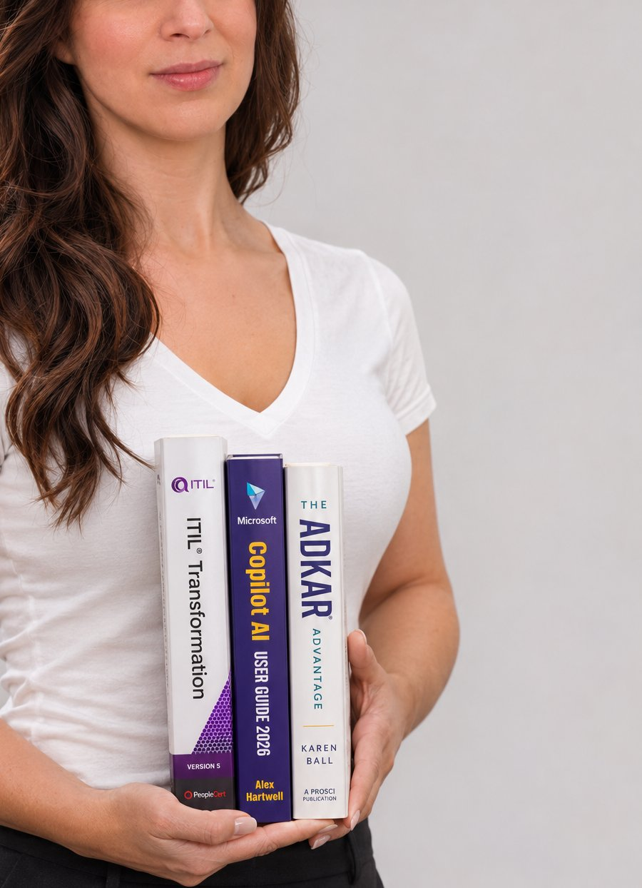
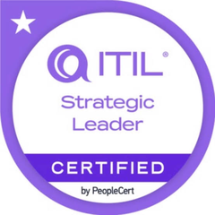
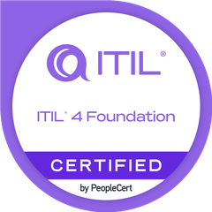

ITSM Process Consultant · ITIL 4 Strategic Leader
Service management that people actually use.
I build and redesign IT service management practices and lead the organisational change that makes them stick. 9+ years across banking services, automotive and manufacturing.
Sound familiar?
The tool is rarely the real problem. Alignment is.
The process exists on paper, but teams work around it.
Workflows were designed, yet everyday work still runs on emails, chats and personal favours.
Change approvals slow delivery instead of protecting it.
The CAB feels like a checkpoint to get past, not a place where risk is actually managed.
Every region and team runs it their own way.
Different rules, different tools, different definitions of done, and no shared picture of the service.
Services
How I can help
Organisational change and ITSM transformation
Operating models, RACI and ways of working that leaders across regions can agree on. I work with resistance, not around it.
Training and workshops
ITIL training, process onboarding and leadership workshops that turn a new way of working into a habit.
Building ITSM from zero
Incident, Problem, Change, Request and Knowledge Management, designed to work in the tool as well: Jira Service Management, ServiceNow and Azure DevOps.
Selected results
What has worked before
Built Incident, Major Incident, Problem, Change and Request Management from zero
Aligned with ISO/IEC 27001, 27017 and 27018. The setup handled about 1,000 tickets in its first six months.
A Quality Gate between Azure DevOps and Jira Service Management
Code is merged only after an approved change, creating a traceable chain from code to CAB approval.
Advised a new CIO on unifying four regional IT organisations
Built Change Enablement from an uncontrolled state, with a maturity assessment, an improvement roadmap and global training.
Chaired a multi-regional CAB across the Americas, China and Europe
Later ran a mature Knowledge Management practice with article owners, annual reviews and quality measurement.
Approach
From first conversation to a practice that holds
-
1
Understand
Maturity snapshot, stakeholder map and the customer journey as it really runs today.
-
2
Design
Processes, roles and an operating model agreed with the people who will run them.
-
3
Enable
The process set up in the tool, and teams trained so they can work the new way.
-
4
Embed
KPIs, service reviews and continual improvement, so the change still holds after I leave.

Not sure where to start?
A five-day ITSM health check: interviews with your key people, a maturity snapshot and three priorities you can act on right away.

About
Process expert, change enabler, trainer
I have spent more than nine years in global, matrixed organisations, from the service desk to leading Change Enablement globally. I care most about the human side of service management: getting leaders and teams across regions to agree on one way of working, and then making sure the tool supports it.
Experience with SMP Solutions, KOSTAL Group, Celanese and Computacenter. BSc in Management, with a thesis on strategic workshops and creative leadership. Based in Budapest.
Certifications

ITIL 4 Strategic LeaderPeopleCert ITIL 4 Specialist: High-velocity ITPeopleCert
ITIL 4 Specialist: High-velocity ITPeopleCert ITIL 4 Specialist: Drive Stakeholder ValuePeopleCert
ITIL 4 Specialist: Drive Stakeholder ValuePeopleCert
ITIL 4 FoundationPeopleCert Microsoft Certified: AI Business ProfessionalMicrosoft · AB-730Verify ↗
Microsoft Certified: Azure FundamentalsMicrosoft · AZ-900Verify ↗
Microsoft Certified: AI Business ProfessionalMicrosoft · AB-730Verify ↗
Microsoft Certified: Azure FundamentalsMicrosoft · AZ-900Verify ↗
Tools
Jira Service Management · Jira Assets · Confluence · Azure DevOps · ServiceNow · Microsoft 365 and Copilot
Let’s talk about your service management challenge.
A short, no-obligation call is usually the best first step.